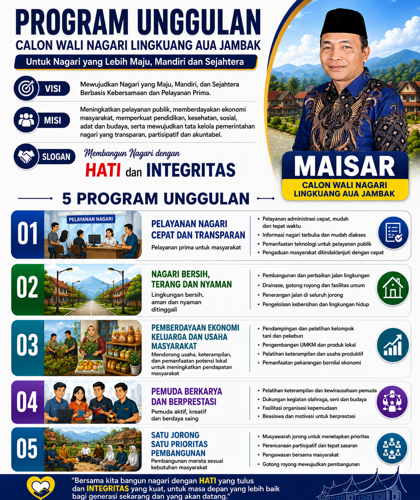
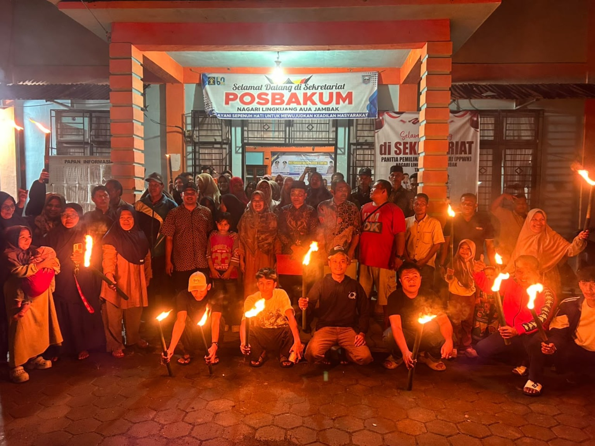

01
Program Unggulan
Penyampaian gagasan dan program unggulan MAISAR untuk Nagari Lingkuang Aua Jambak.
Dokumentasi kegiatan dan tahapan pencalonan MAISAR sebagai Calon Wali Nagari Lingkuang Aua Jambak.

Penyampaian gagasan dan program unggulan MAISAR untuk Nagari Lingkuang Aua Jambak.

Kegiatan sosialisasi dan komunikasi bersama pemilih muda.

Dokumentasi tahapan proses pendaftaran bakal calon Wali Nagari MAISAR.

Kebersamaan pendukung dalam mengantar proses pendaftaran bakal calon Wali Nagari MAISAR.

Dokumentasi setelah proses pendaftaran bakal calon Wali Nagari MAISAR selesai.

Dokumentasi serah terima berkas administrasi pencalonan.

Dokumentasi program unggulan MAISAR.

Profil singkat MAISAR sebagai putra daerah Nagari Lingkuang Aua Jambak.

Visi dan misi sebagai arah perjuangan membangun nagari.